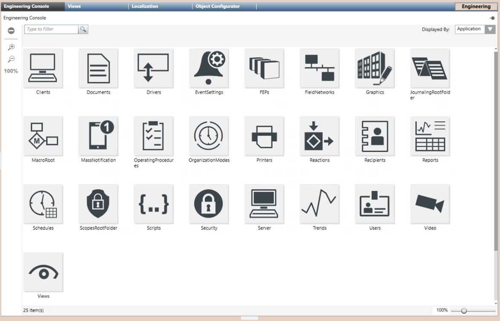
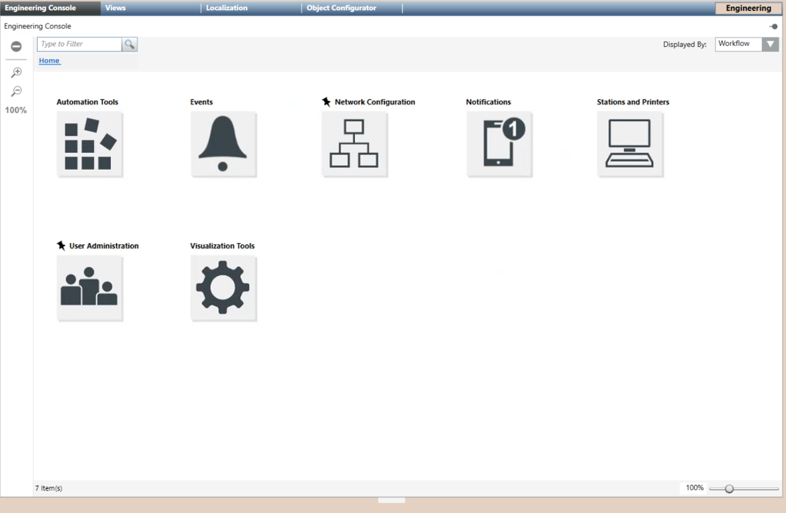

Engineering Console
This section provides instructions on how to use the Engineering Console to quickly access configuration tools in Desigo CC.
The Engineering Console is a tool available in the Primary pane when you select the main Project node in the Management View, and allows you to select an Application or Workflow and use a navigation icon to a specific part of the engineering.
It is therefore a substitute tool for navigation through the System Browser; clicking the icon selects the corresponding object in the System Browser.
Application and Workflow are different ways of collecting icons: you have to use Application if you already know the tool to use, or use Workflow to select the workflow that comes closest to the activity that you want perform and explore the applications connected to it.
For background information, see the reference section. For information on customizing the engineering console, see the Librarians and Distribution Managers Guidelines Document (A6V11643840).
Prerequisites
- System Manager is in Engineering mode.
Selecting an Application
The application view of the Engineering Console provides a flat grid of icons for quickly navigating to the most commonly used configuration applications.
- In System Browser, select the root node Projects or Applications.
NOTE: Engineering Console is available for other selections as well. - Select the Engineering Console tab.
- From the Displayed by drop-down list, select Application.
- The application icons display in a grid view
- Click the icon of the application you want to use.
- The corresponding node is automatically selected in System Browser.
- The application tab is automatically opened in the Primary pane.

Selecting a Workflow
The workflows view of the Engineering Console lets you navigate application icons grouped by the type of task. For example, the Stations and Printers workflow contains the FEPs, Clients and Server application icons.
- In System Browser, select the root node Projects or Applications.
NOTE: Engineering Console is available for other selections as well. - Select the Engineering Console tab.
- From the Displayed by drop-down list, select Workflow.
- The top-level workflow icons display.
- Click a workflow icon to open the subcategories.
NOTE: Workflow icons are organized into category folders; recommended and most used workflows are marked with a pin icon . You can browse folders and go back through the breadcrumb path.
. You can browse folders and go back through the breadcrumb path. - Click an icon to navigate to the corresponding node in System Browser.
- The corresponding object in System Browser is selected.
- The corresponding tab in Primary pane is selected.

Setting Descriptions/Names Preferences
You want to change the display of icons in the Engineering Console by setting different titles and tooltips based on the Description and/or Name object properties. You can do this from System Browser.
- In System Browser, select one of the following:
- Show Description
- Show Description (Name)
- Show Name
- Show Name (Description)
- Titles and tooltips of the Engineering Console icons adapt to the selected choice.
Filtering Icons in the Console
You want to filter the icons in the Engineering Console.
- In System Browser, you set the appropriate title display.
- In Type to Filter Search box, enter the name of the Application or Workflow you are looking for.
- Icons are displayed, in alphabetical order, filtered by the search result.
NOTE: The search is based on the icon title.
Hiding the Engineering Console
You want to hide the Engineering Console tab.
- Select the Engineering Console tab.
- Click
 to remove the tab from the next selections.
to remove the tab from the next selections. - The remove button is highlighted; Engineering Console will be hidden for this session until the next logon.
NOTE: Click the remove button again to undo the action.